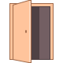

<!--
  Generated template for the ThenNowPage page.

  See http://ionicframework.com/docs/components/#navigation for more info on
  Ionic pages and navigation.
-->
<ion-header>

  <ion-navbar>
    <ion-row>

      <ion-col></ion-col>
        <ion-col col-8 style="text-align: center">
              
          <div [ngSwitch]="graphs">
            <ion-list *ngSwitchCase="">
              <h1 class='myTitle'>{{'Pick a graph'| translate}}</h1>
            </ion-list>
    
            <ion-list *ngSwitchCase="'comp-months'">
              <h1 class='myTitle'>{{'Compare'| translate}} {{'Months'| translate}}</h1>
            </ion-list>

            <ion-list *ngSwitchCase="'comp-years'">
              <h1 class='myTitle'>{{'Compare'| translate}} {{'Years'| translate}}</h1>
            </ion-list>
          </div>
        </ion-col>


        <ion-col style="text-align: right;">
          <br>
          <button class='logoutBtn' ion-button id="logOutBtn" (click)=logOut() color='white'>
            
            {{'Log out'| translate}}
          </button>
        </ion-col>

      </ion-row> 

  </ion-navbar>

</ion-header>

<ion-content padding>


    <div [ngSwitch]="graphs">
        <ion-list *ngSwitchCase="">
            <h1 class="pickgrf"><br>{{'Pick a graph'| translate}} 
              <br> 
            </h1>
          </ion-list>

      <ion-list *ngSwitchCase="'comp-months'">
          <ion-item>

              <ion-row>
                <ion-col col-12>
                  <div style="display: block;">
                  <canvas baseChart height="320"
                              [datasets]="monthsData"
                              [labels]="monthsLabel"
                              [options]="lineChartOptions"
                              [colors]="lineChartColors"
                              [legend]="lineChartLegend"
                              [chartType]="lineChartType"
                              (chartHover)="chartHovered($event)"
                              (chartClick)="chartClicked($event)"></canvas>
                  </div>
                </ion-col>
              </ion-row>
    
            </ion-item>
     
      </ion-list>

      <ion-list *ngSwitchCase="'comp-years'">
          <ion-item>

              <ion-row>
                <ion-col col-12>
                  <div style="display: block;">
                  <canvas baseChart height="320"
                              [datasets]="yearsData"
                              [labels]="yearsLabel"
                              [options]="lineChartOptions"
                              [colors]="lineChartColors"
                              [legend]="lineChartLegend"
                              [chartType]="lineChartType"
                              (chartHover)="chartHovered($event)"
                              (chartClick)="chartClicked($event)"></canvas>
                  </div>
                </ion-col>
              </ion-row>
    
            </ion-item>
      </ion-list>


    </div>
</ion-content>

<ion-footer>
    <ion-toolbar color="white">
    <ion-segment [(ngModel)]="graphs">
      <ion-segment-button value = "comp-months">
        <ion-label>{{'This month vs. last month'| translate}}</ion-label>
      </ion-segment-button>

      <ion-segment-button value = "comp-years">
        <ion-label>{{'This year vs. last year'| translate}}</ion-label>
      </ion-segment-button>

    </ion-segment>
  </ion-toolbar>

</ion-footer>
